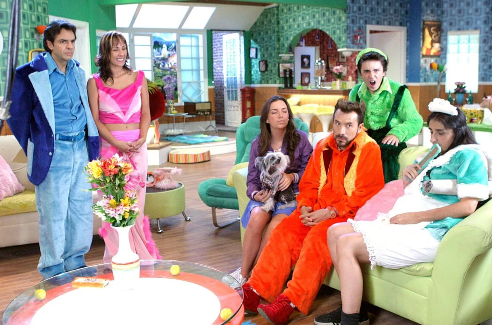

Descripción
La Familia P. Luche es una serie de televisión mexicana de comedia creada por Eugenio Derbez.
La serie se centra en la vida cotidiana de una familia disfuncional que vive en un mundo ficticio donde todo está hecho de peluche.
Los personajes principales incluyen a Ludovico P. Luche, su esposa Federica, y sus hijos Bibi, Ludoviquito y Junior, además de Exelsa,
la sirvienta, y su hijo Maradonio (el cual es hijo de Ludovico). La serie es conocida por su humor
absurdo y situaciones cómicas que reflejan las dinámicas familiares exageradas.

Personajes
- Ludovico P. Luche: El padre de la familia, interpretado por Eugenio Derbez. Es un hombre perezoso y algo torpe, pero con buen corazón.
- Federica P. Luche: La madre de la familia, interpretada por Consuelo Duval. Es una mujer dominante y mandona, pero también cariñosa con sus hijos.
- Bibi P. Luche: La hija mayor, interpretada por Regina Blandón. Es una adolescente rebelde y sarcástica.
- Ludoviquito P. Luche: El hijo menor, interpretado por Miguel Pérez. Es un niño travieso y curioso.
- Junior P. Luche: El hijo del medio, interpretado por Luis Manuel Ávila. Es un joven inmaduro y algo ingenuo.
- Exelsa: La sirvienta de la familia, interpretada por Bárbara Torres. Es una mujer excéntrica y divertida.
- Maradonio: El hijo de Exelsa, interpretado por Jesús Zavala. Es un niño inteligente y astuto.
Temporadas
| Temporada |
Año |
Resumen |
| Temporada 1 |
2002 |
Introducción a la familia P. Luche y sus dinámicas cómicas. Vemos como esta inusual y divertida familia lleva su dia a dia, atravesando por problemas y situaciones graciosas. |
| Temporada 2 |
2007 |
La familia enfrenta nuevos desafíos y situaciones cómicas, incluyendo la llegada de nuevos personajes. Esta temporada es 4 años después del fin de la primer temporada y habla de como los P.Luche se quedaron esos años atrapados en una isla desierta. |
| Temporada 3 |
2012 |
La familia continúa enfrentando situaciones cómicas y absurdas, con episodios que exploran temas como la escuela, el trabajo y las relaciones familiares. Ahora también vemos a los personajes más grandes pero siempre igual de divertidos. |
Opinión
La Familia P. Luche es una serie que ha dejado una marca significativa en la comedia mexicana. Su humor absurdo y situaciones exageradas la hacen única y memorable. Los personajes son entrañables y sus interacciones reflejan, de manera cómica, las dinámicas familiares que muchos pueden reconocer en sus propias vidas. La serie no solo entretiene, sino que también ofrece una crítica social a través de su sátira.
Personalmente, recomiendo mucho esta serie si lo que buscas es pasar un momento divertido y relajado, cada uno de sus cap[itulos contiene chistes y situaciones muy divertidas que te entertendran mucho.
Ver
Esta serie está disponible en plataformas como PrimeVideo, YouTube y Vix.
Ver en PrimeVideo
Ver en YouTube
Ver en Vix